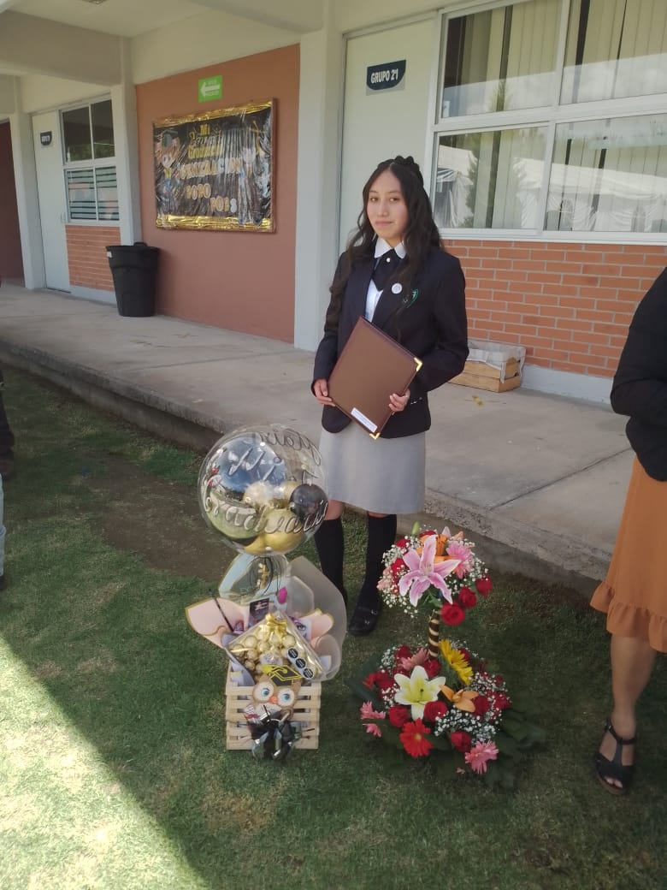

PRIMARIA
curse la primaria en tres escuelas diferentes escuela primaria "sor juana ines de la cruz" de san juan teotihuacan,
escuela primaria "abel c.salazar" de tenango del valle y la escuela primaria "jaime nuno" de la comunidad de acayahual
SECUNDARIA
curse la secundaria en la escuela secundariaignacion lopez rayon que se encuentra en toluca
PREPARATORIA
termine el bachillerato en la escuela preparatoria 297 de toluca

UNIVERSIDAD
actualmente estoy cursando en tercer cuatrimestre de universidad de la carrera de desarroll y gestion de software en la universidad tecnologica de la huasteca hidalguense "UTHH"
 Volver Atrás
Volver Atrás